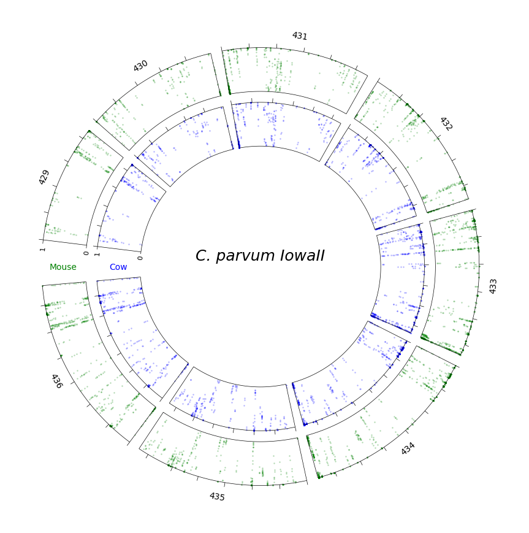
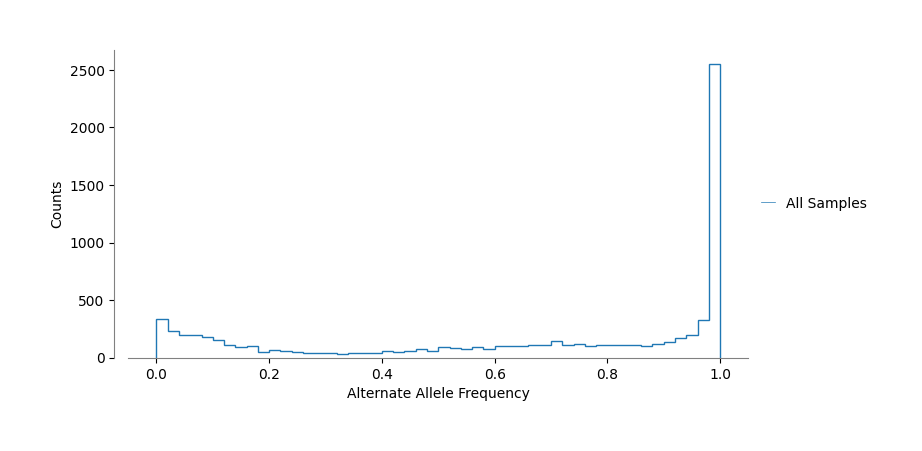
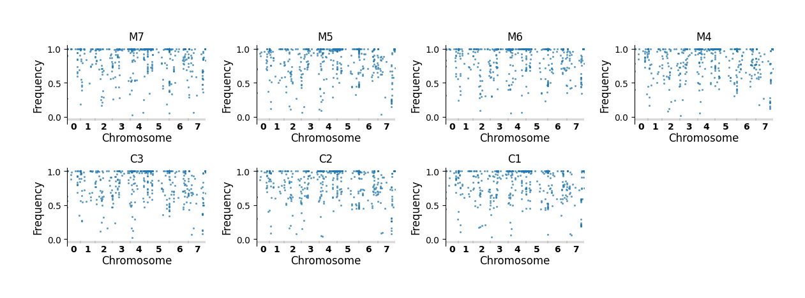
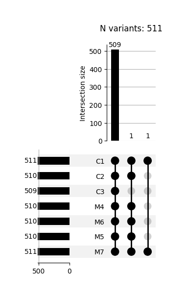
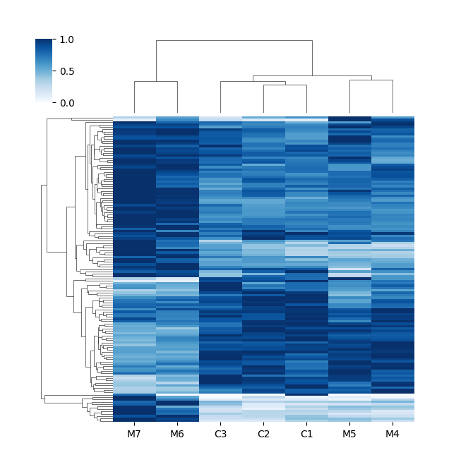

data=pd.read_csv('../data/allele_frequencies.tsv',sep='\t')
make_circos_plot(data)
data=pd.read_csv('../data/allele_frequencies.tsv',sep='\t')
make_circos_plot(data)
Our journey begins with a single infected mouse (M4), harboring a Cryptosporidium strain that would become the progenitor of two distinct evolutionary paths. This initial host served as the critical branching point for our experimental design.
From this single origin, the parasite’s story split into two parallel narratives:
In this pathway, Cryptosporidium continued its journey through a series of mouse hosts, adapting to the murine environment through sequential passages:
M4 → M5 → M6 → M7Each passage potentially allowed the parasite to optimize its survival and reproductive strategies within these genetically similar mammalian hosts.
Simultaneously, we challenged the adaptability of the same initial strain by introducing it to an entirely different mammalian lineage - neonatal calves:
M4 → C1 → C2 → C3This cross-species transmission forced the parasite to navigate a dramatically different physiological environment, potentially driving rapid adaptation.
To fully capture the variability of the Cryptosporidium population in mouse M4 we implemented a customized variant calling pipeline:
┌────────────────────────────────┐
│ FREEBAYES VARIANT CALLING │
├────────────────────────────────┤
│ • Ploidy = 1 │
│ • --pooled-continuous option │
└────────────────────────────────┘Why This Approach Matters?
Beyond Binary Detection: > Traditional presence/absence variant calling would have flattened the rich complexity of our samples, obscuring the very phenomenon we aimed to study. Tipycally variant call in Cryptosporidium is performed with ploidy 2. We belive this is suboptimal as it might filter out variant with more than 2 alleles.
Quantitative Insight: > By focusing on allele frequencies rather than simple variant calls, will allow us to track subtle shifts in population genetics across hosts.
Our approach employed a strategic sequence of filtering steps, each addressing specific aspects of data quality:
┌─────────────────────────────────────┐
│ THREE-TIER FILTERING STRATEGY │
├─────────────────────────────────────┤
│ 1. Quality-based Filtering │
│ 2. Read Depth Optimization │
│ 3. Variant Type Selection │
└─────────────────────────────────────┘filter_variants()======================================
Starting Variant Filtering Process
======================================
Total variants before filtering: 15901
Stage 1: QUAL filtering: 14087 Variants removed and 1814 variants left
Stage 2: FORMAT/DP filtering, DP >= 30 & DP <= 150: 355 Variants removed and 1459 variants left
Stage 3: After keeping SNPs and indels: 203 Variants removed and 1256 variants left# Eliminate low confidence variant calls
bcftools filter -e 'QUAL < 30' "$INPUT_VCF" -o "$QUAL_FILTERED_VCF"Rationale: The QUAL score represents the statistical confidence in each variant call. By establishing a minimum threshold of 30: - We eliminated variants likely to be sequencing errors - Retained variants with a 99.9% probability of being genuine
# Balance between coverage requirements and anomalous amplification
bcftools view -i 'FMT/DP >= 30 & FMT/DP <= 150' "$QUAL_FILTERED_VCF" -o "$DP_FILTERED_VCF"Rationale: Read depth optimization addressed two critical concerns: - Lower bound (DP ≥ 30): Ensured sufficient read coverage - Upper bound (DP ≤ 150): Protected against false positives from regions with anomalous read pileups which often indicate repetitive elements
# Focus on variation subset
bcftools view -v snps,indels "$DP_FILTERED_VCF" -o "$SNP_FILTERED_VCF"Rationale: This final step ensured our analysis focused exclusively on:
Leveraging the robust capabilities of Python’s pandas library transformed our genetic data into a powerhouse of actionable insights.
┌─────────────────────────────────────────────────────┐
│ DATA TRANSFORMATION PIPELINE │
├─────────────────────────────────────────────────────┤
│ 1. Load filtered VCF file │
│ 2. Remove ambiguous reference calls (REF = 'N') │
│ 3. Restructure for for computing frequency │
└─────────────────────────────────────────────────────┘vcf_file = "../data/filtered_final.vcf"
df_vcf = read_vcf(vcf_file)
print(f'step 1: {df_vcf.shape}')
df_vcf=df_vcf[(df_vcf['REF']!='N')]
print(f'step 2: {df_vcf.shape}')step 1: (1256, 16)
step 2: (945, 16)df_vcf.head()| #CHROM | POS | ID | REF | ALT | QUAL | FILTER | INFO | FORMAT | M7 | M5 | M4 | M6 | C3 | C2 | C1 | |
|---|---|---|---|---|---|---|---|---|---|---|---|---|---|---|---|---|
| 0 | CM000429 | 60867 | . | TAAAAAAAAAAGATAT | TAAAAAAAAAAAGATTT,TAAAAAAAAAAAGATAT,TAAAAAAAAA... | 10088.400 | PASS | AB=0,0,0;ABP=0,0,0;AC=0,7,0;AF=0,1,0;AN=7;AO=1... | GT:GQ:DP:AD:RO:QR:AO:QA:GL | 2:138:82:9,2,67,2:9:296:2,67,2:24,2218,68:-172... | 2:138:46:3,2,35,1:3:100:2,35,1:24,1116,34:-91.... | 2:138:69:4,4,59,1:4:132:4,59,1:48,1980,34:-166... | 2:138:82:14,2,62,1:14:461:2,62,1:24,2092,26:-1... | 2:138:57:5,1,45,1:5:163:1,45,1:12,1492,34:-119... | 2:138:69:1,0,60,4:1:34:0,60,4:0,1966,136:-173.... | 2:138:62:4,1,50,4:4:130:1,50,4:12,1678,128:-13... |
| 1 | CM000429 | 60889 | . | ACCCCACT | ACCCCCACT | 11705.800 | PASS | AB=0;ABP=0;AC=7;AF=1;AN=7;AO=435;CIGAR=1M1I7M;... | GT:GQ:DP:AD:RO:QR:AO:QA:GL | 1:137:90:9,81:9:295:81:2686:-215.126,0 | 1:137:53:1,50:1:34:50:1596:-140.656,0 | 1:137:70:2,66:2:68:66:2184:-190.372,0 | 1:137:82:11,70:11:359:70:2241:-169.324,0 | 1:137:45:5,40:5:169:40:1237:-96.064,0 | 1:137:68:1,66:1:31:66:2174:-192.923,0 | 1:137:69:4,62:4:126:62:2002:-168.787,0 |
| 2 | CM000429 | 76625 | . | A | G | 265.872 | PASS | AB=0;ABP=0;AC=1;AF=0.142857;AN=7;AO=248;CIGAR=... | GT:GQ:DP:AD:RO:QR:AO:QA:GL | 0:131:104:76,28:76:2560:28:952:0,-144.672 | 0:131:80:52,28:52:1738:28:930:0,-72.6994 | 0:131:84:50,34:50:1596:34:1156:0,-39.5691 | 0:131:89:61,28:61:2066:28:944:0,-100.949 | 1:131:83:36,47:36:1216:47:1598:-34.3706,0 | 0:131:112:78,34:78:2630:34:1126:0,-135.322 | 0:131:112:63,49:63:2126:49:1658:0,-42.1062 |
| 3 | CM000429 | 82019 | . | A | T | 8192.190 | PASS | AB=0;ABP=0;AC=7;AF=1;AN=7;AO=410;CIGAR=1X;DP=5... | GT:GQ:DP:AD:RO:QR:AO:QA:GL | 1:160:98:9,89:9:306:89:2994:-241.841,0 | 1:160:51:15,36:15:510:36:1186:-60.8115,0 | 1:160:86:19,67:19:638:67:2240:-144.133,0 | 1:160:90:15,75:15:488:75:2488:-179.952,0 | 1:160:70:26,44:26:862:44:1472:-54.8869,0 | 1:160:81:31,50:31:1046:50:1662:-55.4182,0 | 1:160:71:22,49:22:748:49:1666:-82.5935,0 |
| 4 | CM000429 | 82192 | . | G | A | 6765.840 | PASS | AB=0;ABP=0;AC=6;AF=0.857143;AN=7;AO=398;CIGAR=... | GT:GQ:DP:AD:RO:QR:AO:QA:GL | 1:134:104:11,93:11:374:93:3124:-247.418,0 | 1:134:67:20,47:20:658:47:1598:-84.5836,0 | 1:134:75:25,50:25:842:50:1692:-76.4771,0 | 1:134:102:26,76:26:846:76:2568:-154.943,0 | 0:0:53:28,25:28:944:25:850:0,-8.45503 | 1:134:92:35,57:35:1190:57:1938:-67.2984,0 | 1:134:83:33,50:33:1084:50:1692:-54.7114,0 |
┌─────────────────────────────────────────────────────────┐
│ ALLELE FREQUENCY CALCULATION COMPONENTS │
├─────────────────────────────────────────────────────────┤
│ RO: Reference Allele Observation count │
│ AO: Alternate Allele Observation count │
│ DP: Total Read Depth at position │
│ │
│ Allele Frequency = AO / DP │
└─────────────────────────────────────────────────────────┘df_allele_counts = expand_multiallelic_variants(df_vcf)
df_allele_counts.to_csv("../data/allele_counts_expanded.tsv", sep="\t", index=False)
print("✅ Extracted and expanded allele counts saved to allele_counts_expanded.tsv")✅ Extracted and expanded allele counts saved to allele_counts_expanded.tsvdf_allele_counts.head()| #CHROM | POS | REF | ALT | INFO_TYPE | RO_M7 | DP_M7 | AO_M7 | RO_M5 | DP_M5 | ... | AO_M6 | RO_C3 | DP_C3 | AO_C3 | RO_C2 | DP_C2 | AO_C2 | RO_C1 | DP_C1 | AO_C1 | |
|---|---|---|---|---|---|---|---|---|---|---|---|---|---|---|---|---|---|---|---|---|---|
| 0 | CM000429 | 60867 | TAAAAAAAAAAGATAT | TAAAAAAAAAAAGATTT | complex | 9 | 82 | 2 | 3 | 46 | ... | 2 | 5 | 57 | 1 | 1 | 69 | 0 | 4 | 62 | 1 |
| 1 | CM000429 | 60867 | TAAAAAAAAAAGATAT | TAAAAAAAAAAAGATAT | ins | 9 | 82 | 67 | 3 | 46 | ... | 62 | 5 | 57 | 45 | 1 | 69 | 60 | 4 | 62 | 50 |
| 2 | CM000429 | 60867 | TAAAAAAAAAAGATAT | TAAAAAAAAAAAAGATAT | ins | 9 | 82 | 2 | 3 | 46 | ... | 1 | 5 | 57 | 1 | 1 | 69 | 4 | 4 | 62 | 4 |
| 3 | CM000429 | 60889 | ACCCCACT | ACCCCCACT | ins | 9 | 90 | 81 | 1 | 53 | ... | 70 | 5 | 45 | 40 | 1 | 68 | 66 | 4 | 69 | 62 |
| 4 | CM000429 | 76625 | A | G | snp | 76 | 104 | 28 | 52 | 80 | ... | 28 | 36 | 83 | 47 | 78 | 112 | 34 | 63 | 112 | 49 |
5 rows × 26 columns
shell we also remove complex? yes for now
print(df_allele_counts.shape)
df_allele_counts = df_allele_counts[
df_allele_counts[[n for n in df_allele_counts.columns if n.startswith('AO')]].max(axis=1)>=5]
df_allele_counts = df_allele_counts[df_allele_counts['INFO_TYPE']!='complex']
print(df_allele_counts.shape)(1937, 26)
(1121, 26)df_af = compute_frequencies(df_allele_counts)
df_af.to_csv("../data/allele_frequencies.tsv", sep="\t", index=False)
print("✅ Allele frequencies saved to allele_frequencies.tsv")✅ Allele frequencies saved to allele_frequencies.tsvdf_af.head()| #CHROM | POS | REF | ALT | AF_M7 | AF_M5 | AF_M4 | AF_M6 | AF_C3 | AF_C2 | AF_C1 | |
|---|---|---|---|---|---|---|---|---|---|---|---|
| 1 | CM000429 | 60867 | TAAAAAAAAAAGATAT | TAAAAAAAAAAAGATAT | 0.817073 | 0.760870 | 0.855072 | 0.756098 | 0.789474 | 0.869565 | 0.806452 |
| 3 | CM000429 | 60889 | ACCCCACT | ACCCCCACT | 0.900000 | 0.943396 | 0.942857 | 0.853659 | 0.888889 | 0.970588 | 0.898551 |
| 4 | CM000429 | 76625 | A | G | 0.269231 | 0.350000 | 0.404762 | 0.314607 | 0.566265 | 0.303571 | 0.437500 |
| 5 | CM000429 | 82019 | A | T | 0.908163 | 0.705882 | 0.779070 | 0.833333 | 0.628571 | 0.617284 | 0.690141 |
| 6 | CM000429 | 82192 | G | A | 0.894231 | 0.701493 | 0.666667 | 0.745098 | 0.471698 | 0.619565 | 0.602410 |
With our extracted allele frequencies in hand, we could now explore how these frequencies were distributed across our samples
fig,ax=plt.subplots(figsize=(8,4))
data=pd.read_csv('../data/allele_frequencies.tsv',sep='\t')
tmp = pd.Series(data.iloc[:,4:].values.flatten())
tmp.name='All Samples'
tmp.plot(kind='hist',histtype='step',bins=50,ax=ax,linewidth=1)
ax.set_xlabel('Alternate Allele Frequency')
ax.set_ylabel('Counts')
mod_hist_legend(ax)
clean_axes(ax)
plt.show()
“with also allele frequencies deviating from the expected 0/1 pattern”
To gain deeper insight into the evolutionary dynamics of our Cryptosporidium populations, we narrowed our analysis to focus specifically on Single Nucleotide Variants (SNVs).
┌─────────────────────────────────────────────────────────┐
│ SNV CLUSTERING WORKFLOW │
├─────────────────────────────────────────────────────────┤
│ 1. Filter dataset to retain only SNVs │
│ 2. Normalize frequencies (divide by max frequency) │
│ 4. Include only variants with >30% frequency │
│ difference between any two samples │
│ 5. Perform hierarchical clustering │
│ 6. Visualize dendrogram │
└─────────────────────────────────────────────────────────┘from ProjectUtility.core import clean_axes
import numpy as np
fig,axes =plt.subplots(ncols=4,nrows=2,figsize=(12,4))
axes=axes.flatten()
for i, col in enumerate(['AF_M7', 'AF_M5', 'AF_M6', 'AF_M4','AF_C3', 'AF_C2', 'AF_C1']):
#col = 'AF_'+run
run = col.split('_')[1]
tmp = data.copy()
tmp = tmp[(tmp['REF'].str.len()==1) & (tmp['ALT'].str.len()==1)]
tmp = tmp[['#CHROM', 'POS', col]]
tmp = tmp[tmp[col]>0]
title = col#mapping.get(run,run)
plot_chromosomal_af_values2(tmp, axes[i])
axes[i].set_title(col.split('_')[1])
axes[i].set_ylabel('Frequency',fontsize=12)
axes[i].set_xlabel('Chromosome', labelpad=10,fontsize=12)
#clean_axes(axes[new_i])
axes[-1].set_axis_off()
plt.tight_layout()
plt.savefig('../data/Chromosome_Frequency.png')
plt.savefig('../data/Chromosome_Frequency.svg')
from upsetplot import UpSet
from upsetplot import from_contents
import matplotlib.pyplot as plt
data=pd.read_csv('../data/allele_frequencies.tsv',sep='\t')
print(f'step 1 starting variants: {data.shape}')
data=data[(data['ALT'].str.len()==1)]
print(f'step 2 only snv variants: {data.shape}')
clustering_data = data[['#CHROM','POS','AF_M7', 'AF_M5', 'AF_M6', 'AF_M4','AF_C3', 'AF_C2', 'AF_C1']]
clustering_data=clustering_data.set_index(['#CHROM','POS'])
clustering_data.columns = ['M7', 'M5', 'M6', 'M4','C3', 'C2', 'C1']
print(clustering_data.shape)
clustering_data=clustering_data.reset_index(drop=True)
upset_data = (clustering_data>0).reset_index()
upset_data=upset_data.set_index(['M7', 'M5', 'M6', 'M4','C3', 'C2', 'C1'])
upset_data.columns=['variant']
#upset_data.head()
ax_dict = UpSet(upset_data,
subset_size="count",
sort_by='input',
sort_categories_by='input',
show_counts=True,
).plot()
nvariants = upset_data.shape[0]
ax_dict['intersections'].set_title(f'N variants: {nvariants}',y=1.1)
plt.savefig('../data/Upset_all.png')
plt.savefig('../data/Upset_all.svg')
plt.show()step 1 starting variants: (1121, 11)
step 2 only snv variants: (511, 11)
(511, 7)
'2.3.0'data=pd.read_csv('../data/allele_frequencies.tsv',sep='\t')
print(f'step 1 starting variants: {data.shape}')
data=data[(data['ALT'].str.len()==1)]
print(f'step 2 only snv variants: {data.shape}')
clustering_data = data[['#CHROM','POS','AF_M7', 'AF_M5', 'AF_M6', 'AF_M4','AF_C3', 'AF_C2', 'AF_C1']]
clustering_data=clustering_data.set_index(['#CHROM','POS'])
clustering_data = clustering_data.divide(clustering_data.max(axis=1),axis=0)
clustering_max=clustering_data.max(axis=1)
clustering_min=clustering_data.min(axis=1)
clustering_data = clustering_data[(clustering_max-clustering_min)>0.3]
clustering_data.columns = ['M7', 'M5', 'M6', 'M4','C3', 'C2', 'C1']
clustering_data=clustering_data.reset_index(drop=True)
print('selected variants:', clustering_data.shape)
g = sns.clustermap(clustering_data,cmap='Blues',figsize=(6,6),cbar_pos=(0.02, 0.82, 0.04, 0.15))
g.fig.axes[2].set_yticks([])
plt.savefig('../data/Allele_Frequency_SNVs.svg')
plt.savefig('../data/Allele_Frequency_SNVs.png')step 1 starting variants: (1121, 11)
step 2 only snv variants: (511, 11)
selected variants: (129, 7)
The hierarchical clustering dendrogram revealed several patterns:
Clear Host-Species Separation: > “The clustering segregated bovine and murine samples, suggesting host specific pressure on the Cryptosporidium population.”
Temporal Evolution in Murine Hosts: > “The murine samples displayed a clear temporal progression, with M6 and M7 clustering distinctly from the earlier passages (M4-M5).”
Similarity Between Early Murine and Bovine Samples: > “The three bovine samples (C1-C3) showed greater similarity to the early murine passages (M4-M5) than to the later murine passages (M6-M7). Bovine adaptation might be slower to kick in.”
Caveats: > “We might be overinterpret results, the variation in frequency might be due to fluctuations/sampling in the population used for the M6 infection”
Having explored the dynamics SNVs through clustering analysis, we step back to examine the holistic picture of where variants (SNVs and INDELs) are distributed across the Cryptosporidium genome.
data=pd.read_csv('../data/allele_frequencies.tsv',sep='\t')
make_circos_plot(data)
The circular genome plot revealed several striking patterns:
“The distribution of variants across the Cryptosporidium genome is strikingly non-random, with clear hotspots of both SNVs and INDELs congregating in specific genomic regions other then close to the telomers as alredy observed in other study”
We plan to compare our samples with other environmental and outbreak-related Cryptosporidium genome sequencing projects.
The complete analysis pipeline is available as a Python package in our GitHub repository
pip install git+https://github.com/mtinti/cryptosporidium_host_adaptation.gitThis pipeline was developed and tested with: - samtools (Version: 1.21) - bcftools (Version: 1.21)
For interactive exploration and reproducibility, we provide Jupyter notebooks accessible through MyBinder. > The computational environment includes all necessary dependencies pre-configured.